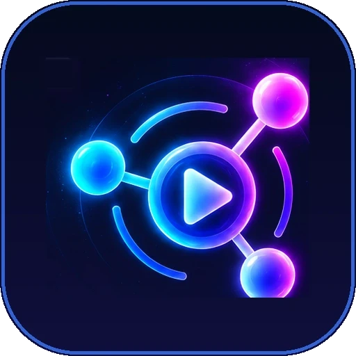

Play together
Synchronized audio across phones, laptops and speakers. Choose which server to use.
PHP
PHP edition
Runs on this website's PHP hosting. Devices update about once a second.
Open PHP app Node.jsNode.js edition
Runs on Render with live WebSocket updates for the tightest sync.
Open Node.js appThe Node.js server sleeps when idle on Render's free plan, so it can take up to a minute to open the first time.